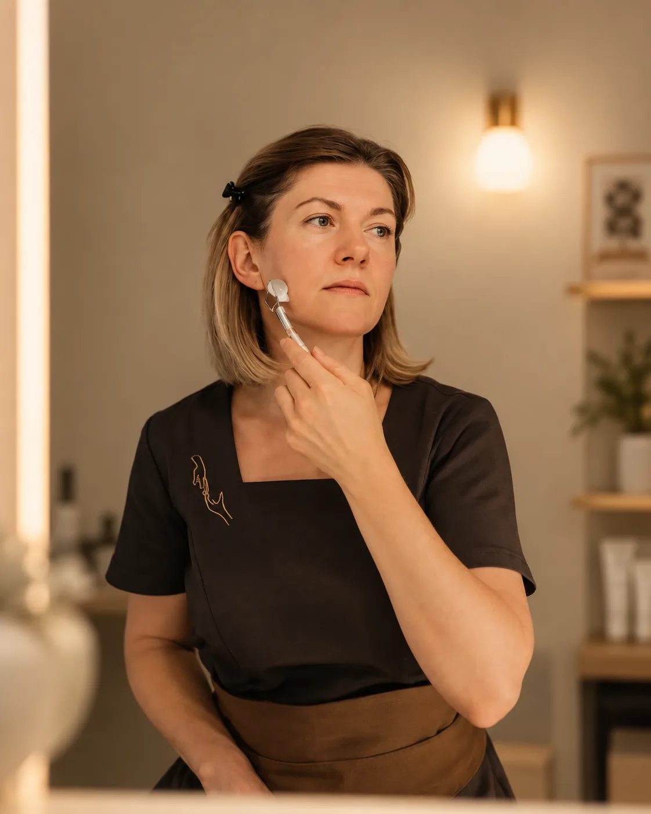

Оксана Потоцкая
Топ-мастер и основатель студии
Массажист и косметолог. Судья на международных чемпионатах по массажу; победитель, призёр и спикер шести Чемпионатов по массажу и косметологии. Дипломированный тренер-преподаватель по массажу лица, разработчик авторских техник массажа лица для работы с возрастными изменениями и асимметрией. Ведёт уход за кожей лица, авторские программы массажа лица, коррекцию осанки, детский и логопедический массаж.
«3 года ощущаю прелесть этой процедуры. Руки мастера творят чудеса. Спасибо огромное Оксане и ее шикарному персоналу»
«Это лучший уход не только лица и тела, но и душевного состояния. Выход в точку НОЛЬ, где все хорошо и ничего не омрачает жизнь, ни внешность, ни внешние факторы. Оксана - богиня массажа, всегда чувствует проблемные зоны и уделает им особенное внимание. При выборе подарков - предпочитаю дарить уход за собой женщинам.»
«Впервые попробовала аювердический массаж на лицо и тело с огнём) Ощущения невероятные. Процедура прошла очень приятно, массаж делала Оксана, очень приятный человек, профессионал своего дела. Перед процедурой уточнили противопоказания, индивидуальные особенности. Промассировали зоны, которые больше всего отекли, стала лучше спать и настроение тоже улучшилось. Время пролетело крайне приятно и незаметно. Тело было теплое и мягкое, приятно пахло травами. Рекомендую попробовать каждому) ) 👍»
«Самый лучший массаж лица! Мне очень нравится, невероятно профессиональный мастер Оксана, эффект видно уже после одного раза! Я в восторге! Сервис на высшем уровне, клиентоориентированность! В студии уютно, красиво и эстетично! Тот редкий случай, когда никаких замечаний, а одна благодарность!»